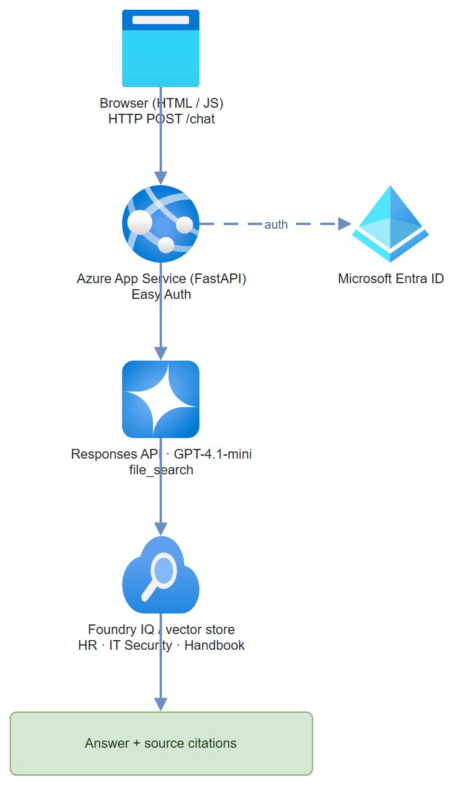

Build it yourself. This project is part of the AI Projects for Cloud Solution Architects portfolio. Full source, code, and the latest updates live in the csa-ai-projects repo on GitHub.
Build an HR or IT policy chatbot that stays on-topic, answers grounded in your actual documents, and refuses to make things up — no custom chunking pipeline required.
What You're Building
A web chatbot deployed on Azure App Service with Entra ID authentication. The backend is a FastAPI app that calls a Foundry model through the Responses API with the file_search tool, grounded in your policy documents (Foundry IQ or a vector store). You upload policy PDFs once; the model retrieves relevant chunks automatically and cites them. A minimal HTML/JS frontend handles the chat UI.
Prerequisites
- A Microsoft Foundry / Azure AI Services resource with a
gpt-4.1-minideployment:bash az cognitiveservices account deployment create --name <res> --resource-group <rg> \ --deployment-name gpt-4.1-mini --model-name gpt-4.1-mini --model-version 2025-04-14 \ --model-format OpenAI --sku-name GlobalStandard --sku-capacity 10 - Foundry IQ (managed knowledge) or a vector store to ground answers — Step 1 creates one and gives you a vector store ID (
vs-…). - Azure App Service (B1 or higher, Python 3.11 runtime) for hosting the chat UI.
- Azure CLI logged in with Cognitive Services OpenAI User (or Contributor) on the resource. This demo uses Entra ID auth, not API keys.
AZURE_OPENAI_ENDPOINT(thehttps://<resource>.cognitiveservices.azure.com/host) andPOLICY_VECTOR_STORE_IDset in.env.- Python 3.11+
- 1–5 policy documents (PDF,
.txt, or.md) to test with
pip install "openai>=1.30.0" azure-identity fastapi uvicorn python-dotenv
Architecture

Step-by-Step Build
Step 1 — Upload documents and create the knowledge index
Option A — Foundry portal (Foundry IQ):
- Open https://ai.azure.com → your project
- Navigate to Knowledge → Foundry IQ
- Click Add data source → Upload files
- Upload your PDFs (HR policy, IT security policy, employee handbook, etc.)
- Wait for indexing to complete (status turns green)
- Copy the vector store ID (
vs-…) it exposes — that's what thefile_searchtool needs
Option B — code (no portal): upload files and create a vector store directly, exactly as in Project 01:
from azure.identity import DefaultAzureCredential, get_bearer_token_provider
from openai import AzureOpenAI
client = AzureOpenAI(
azure_endpoint=os.environ["AZURE_OPENAI_ENDPOINT"],
azure_ad_token_provider=get_bearer_token_provider(
DefaultAzureCredential(), "https://cognitiveservices.azure.com/.default"),
api_version="2025-04-01-preview",
)
file_ids = []
for path in ["HR-Policy.pdf", "IT-Security-Policy.pdf"]:
with open(path, "rb") as f:
file_ids.append(client.files.create(file=f, purpose="assistants").id)
vs = client.vector_stores.create(name="policy-chatbot-store", file_ids=file_ids)
print("POLICY_VECTOR_STORE_ID:", vs.id) # vs-…
Gotcha: Foundry IQ processes PDFs natively, but for PDFs with complex tables or multi-column layouts, accuracy degrades. Use Azure AI Document Intelligence preprocessing for those.
Step 2 — Create the FastAPI backend
# app.py
import os
from fastapi import FastAPI, HTTPException
from fastapi.staticfiles import StaticFiles
from fastapi.middleware.cors import CORSMiddleware
from pydantic import BaseModel
from dotenv import load_dotenv
from azure.identity import DefaultAzureCredential, get_bearer_token_provider
from openai import AzureOpenAI
load_dotenv()
app = FastAPI()
app.add_middleware(
CORSMiddleware,
allow_origins=["*"],
allow_methods=["POST"],
allow_headers=["*"]
)
ENDPOINT = os.environ["AZURE_OPENAI_ENDPOINT"] # https://<resource>.cognitiveservices.azure.com/
VECTOR_STORE_ID = os.environ["POLICY_VECTOR_STORE_ID"] # vs-… from Step 1
MODEL = os.environ.get("CHAT_MODEL", "gpt-4.1-mini")
# Entra ID auth (managed identity in App Service, az login locally) — no API keys
token_provider = get_bearer_token_provider(
DefaultAzureCredential(), "https://cognitiveservices.azure.com/.default"
)
client = AzureOpenAI(
azure_endpoint=ENDPOINT,
azure_ad_token_provider=token_provider,
api_version="2025-04-01-preview",
)
INSTRUCTIONS = (
"You are an HR/IT policy assistant for our company. "
"Answer questions using only the policy documents returned by file search. "
"Always cite the specific policy document. "
"If the answer isn't in the documents, say exactly: "
"\"I don't have that information in our current policies - please contact HR directly.\" "
"Never guess at policy details. Never provide legal advice."
)
class ChatRequest(BaseModel):
message: str
previous_response_id: str | None = None # None = new conversation
class ChatResponse(BaseModel):
reply: str
response_id: str
citations: list[dict]
def _extract(response):
"""Pull answer text and file_search citations out of a Responses API result."""
answer, citations, seen = "", [], set()
for item in response.output:
if getattr(item, "type", None) == "message":
for block in item.content:
if getattr(block, "type", None) == "output_text":
answer += block.text
# Responses API file_search annotations are flat
# AnnotationFileCitation objects (type/file_id/filename) —
# not the older Assistants-style nested `ann.file_citation`.
for ann in getattr(block, "annotations", None) or []:
if getattr(ann, "type", None) == "file_citation":
name = getattr(ann, "filename", None) or getattr(ann, "file_id", "")
if name and name not in seen:
seen.add(name)
citations.append(
{"filename": name, "file_id": getattr(ann, "file_id", "")}
)
return answer, citations
@app.post("/chat", response_model=ChatResponse)
async def chat(req: ChatRequest):
try:
# The Responses API keeps conversation state server-side via
# previous_response_id — no threads/runs bookkeeping needed.
response = client.responses.create(
model=MODEL,
input=req.message,
previous_response_id=req.previous_response_id,
instructions=INSTRUCTIONS,
tools=[{"type": "file_search", "vector_store_ids": [VECTOR_STORE_ID]}],
include=["file_search_call.results"],
)
except Exception as e:
raise HTTPException(status_code=500, detail=str(e))
reply, citations = _extract(response)
return ChatResponse(reply=reply, response_id=response.id, citations=citations)
@app.get("/health")
def health():
return {"status": "ok"}
# Serve the static chat UI
app.mount("/", StaticFiles(directory="static", html=True), name="static")
Step 3 — Build the chat UI
<!-- static/index.html -->
<!DOCTYPE html>
<html lang="en">
<head>
<meta charset="UTF-8">
<meta name="viewport" content="width=device-width, initial-scale=1.0">
<title>Policy Assistant</title>
<style>
* { box-sizing: border-box; margin: 0; padding: 0; }
body { font-family: "Segoe UI", sans-serif; background: #f5f5f5; }
#app { max-width: 800px; margin: 40px auto; background: white;
border-radius: 8px; box-shadow: 0 2px 8px rgba(0,0,0,0.1);
display: flex; flex-direction: column; height: 80vh; }
header { background: #0078d4; color: white; padding: 16px 20px;
border-radius: 8px 8px 0 0; }
header h1 { font-size: 1.2rem; }
header p { font-size: 0.85rem; opacity: 0.8; margin-top: 4px; }
#messages { flex: 1; overflow-y: auto; padding: 20px; display: flex;
flex-direction: column; gap: 12px; }
.msg { max-width: 75%; padding: 10px 14px; border-radius: 8px;
line-height: 1.5; font-size: 0.9rem; }
.msg.user { background: #0078d4; color: white; align-self: flex-end;
border-bottom-right-radius: 2px; }
.msg.bot { background: #f0f0f0; color: #333; align-self: flex-start;
border-bottom-left-radius: 2px; }
.citation { font-size: 0.75rem; color: #666; margin-top: 6px;
font-style: italic; }
#input-row { display: flex; padding: 16px; border-top: 1px solid #e0e0e0; gap: 8px; }
#user-input { flex: 1; padding: 10px 14px; border: 1px solid #ccc;
border-radius: 6px; font-size: 0.9rem; outline: none; }
#user-input:focus { border-color: #0078d4; }
#send-btn { background: #0078d4; color: white; border: none;
padding: 10px 20px; border-radius: 6px; cursor: pointer;
font-size: 0.9rem; }
#send-btn:disabled { opacity: 0.5; cursor: not-allowed; }
</style>
</head>
<body>
<div id="app">
<header>
<h1>Policy Assistant</h1>
<p>Ask questions about HR and IT policies</p>
</header>
<div id="messages">
<div class="msg bot">
Hello! I can answer questions about our HR and IT policies.
What would you like to know?
</div>
</div>
<div id="input-row">
<input id="user-input" type="text" placeholder="Ask a policy question..."
autocomplete="off" />
<button id="send-btn">Send</button>
</div>
</div>
<script>
let previousResponseId = localStorage.getItem('policyResponseId');
async function sendMessage() {
const input = document.getElementById('user-input');
const btn = document.getElementById('send-btn');
const text = input.value.trim();
if (!text) return;
appendMessage(text, 'user');
input.value = '';
btn.disabled = true;
try {
const res = await fetch('/chat', {
method: 'POST',
headers: { 'Content-Type': 'application/json' },
body: JSON.stringify({ message: text, previous_response_id: previousResponseId })
});
const data = await res.json();
previousResponseId = data.response_id;
localStorage.setItem('policyResponseId', previousResponseId);
const msgDiv = appendMessage(data.reply, 'bot');
if (data.citations && data.citations.length > 0) {
const citeDiv = document.createElement('div');
citeDiv.className = 'citation';
citeDiv.textContent = `Sources: ${data.citations.length} policy document(s)`;
msgDiv.appendChild(citeDiv);
}
} catch (err) {
appendMessage('Sorry, something went wrong. Please try again.', 'bot');
} finally {
btn.disabled = false;
input.focus();
}
}
function appendMessage(text, role) {
const div = document.createElement('div');
div.className = `msg ${role}`;
div.textContent = text;
const messages = document.getElementById('messages');
messages.appendChild(div);
messages.scrollTop = messages.scrollHeight;
return div;
}
document.getElementById('send-btn').addEventListener('click', sendMessage);
document.getElementById('user-input').addEventListener('keydown', e => {
if (e.key === 'Enter') sendMessage();
});
</script>
</body>
</html>
Step 4 — Deploy to Azure App Service
# Create App Service plan and web app
az appservice plan create \
--name policy-chatbot-plan \
--resource-group $RG \
--sku B1 \
--is-linux
az webapp create \
--name policy-chatbot-app \
--resource-group $RG \
--plan policy-chatbot-plan \
--runtime "PYTHON:3.11"
# Configure environment variables
az webapp config appsettings set \
--name policy-chatbot-app \
--resource-group $RG \
--settings \
AZURE_OPENAI_ENDPOINT="https://<resource>.cognitiveservices.azure.com/" \
POLICY_VECTOR_STORE_ID="<vs-id-from-step-1>" \
SCM_DO_BUILD_DURING_DEPLOYMENT=true
# Enable managed identity so the app can authenticate to Foundry
az webapp identity assign \
--name policy-chatbot-app \
--resource-group $RG
# Grant the managed identity data-plane access to the Foundry / AI Services resource
# (use the principal ID from the output above)
az role assignment create \
--assignee <principal-id> \
--role "Cognitive Services OpenAI User" \
--scope $(az cognitiveservices account show --name <res> --resource-group $RG --query id -o tsv)
Step 5 — Enable Entra ID auth (Easy Auth)
az webapp auth microsoft update \
--name policy-chatbot-app \
--resource-group $RG \
--client-id <entra-app-client-id> \
--client-secret <entra-app-client-secret> \
--tenant-id <tenant-id> \
--issuer https://login.microsoftonline.com/<tenant-id>/v2.0
az webapp auth update \
--name policy-chatbot-app \
--resource-group $RG \
--enabled true \
--action RedirectToLoginPage
Now only users in your tenant can access the chatbot.
Test It
# Run locally first
uvicorn app:app --reload --port 8000
Test queries: - "How many vacation days do I get in my first year?" - "What is our password rotation policy?" - "Can I expense a home office monitor?"
Watch for:
- Answers grounded in documents (check citations in the response)
- Refusals when the question is outside policy scope
- No hallucinated policy details
Common Mistakes
- Reaching for the old Assistants
agentsAPI.azure-ai-projects2.x removed the threads/runs Assistants surface —AIProjectClienthas no.agents, andMessageRole/PromptAgentDefinition/FileSearchToolaren't importable. Use theAzureOpenAIResponses API with thefile_searchtool, as shown above. - Response ID not persisted across browser sessions. Store the
response_idinlocalStorage(the UI above does) or a server-side session. Without it, every page refresh starts a new conversation. - Passing the wrong knowledge identifier. The
file_searchtool wants a vector store ID (vs-…), not a file ID (assistant-…) or a portal display name. Step 1 prints the value you need.
Extend It
- Scope by department: Create separate agents per department (HR, IT, Finance) each with their own Foundry IQ knowledge source. Route requests based on the authenticated user's group from Entra ID claims.
- Audit logging: Log every question + answer pair to Azure Cosmos DB with the user's UPN (from the Easy Auth headers). Build a Power BI report on top for compliance review.
- Feedback buttons: Add thumbs up/down to each bot message. Store feedback in Cosmos DB and review low-rated answers weekly to improve the document corpus.